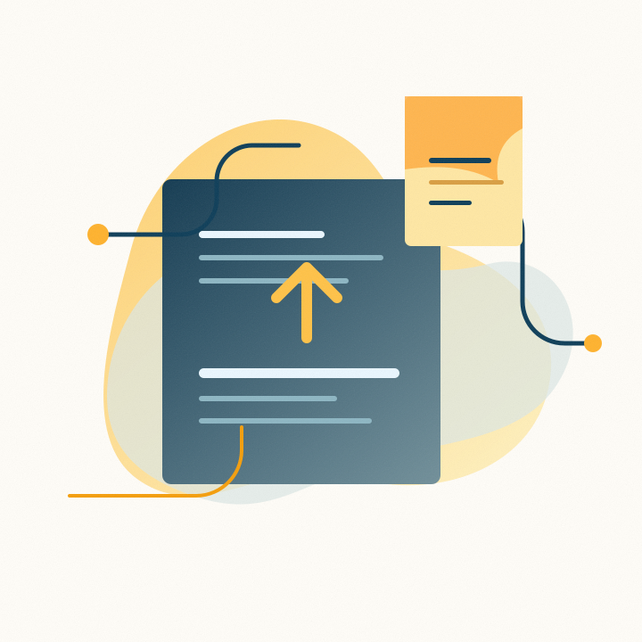
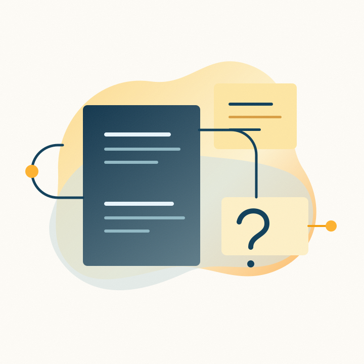
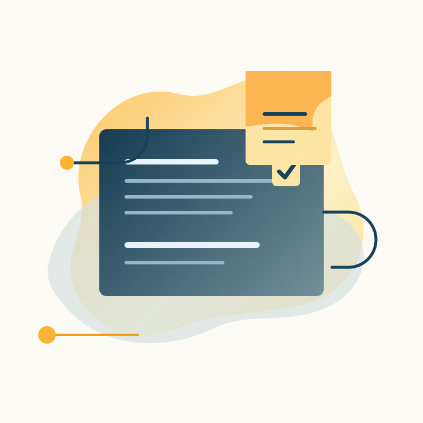
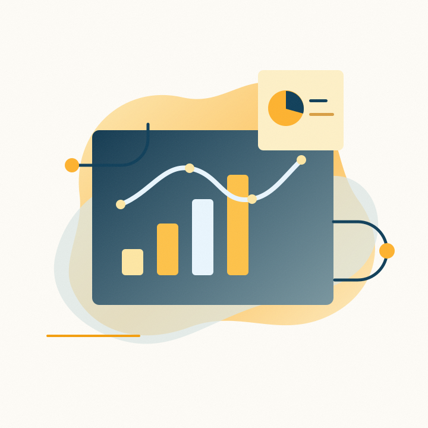

Step 1
Upload your source materials
Add mission statements, prior proposals, budgets, bios, impact reports, and program notes.
Upload past proposals, budgets, impact reports, and program materials. Granted uses that context to draft funder-aligned responses your team can review, revise, and export.
Granted is built around the work grant teams already do: collecting evidence, answering funder questions, reviewing language, and preparing clean exports.

Add mission statements, prior proposals, budgets, bios, impact reports, and program notes.

Paste questions or upload an application so Granted can map each response to the funder’s ask.

Produce tailored answers using your stored context, with less blank-page writing and rework.

Revise, select the current version, and export a clean application draft for final submission review.
Granted keeps your mission, programs, budgets, staff experience, and past proposal language available across applications.
Drafts are based on the material you provide, so claims and details are easier for your team to verify.
Keep iterations organized as your team edits language, updates metrics, and selects the final response.
Small development teams need speed, but they also need accuracy, privacy, and a clear review path. The copy should sell that discipline directly.
Your uploaded content is used to help your organization draft. It should not feel like a public prompt box.
Granted accelerates the first draft. Your team still owns strategy, factual accuracy, and final submission decisions.
Program details, metrics, and reporting needs stay connected to the grant work instead of scattered across files.
Start with your existing materials and turn the next application into a focused review process instead of a blank-page scramble.